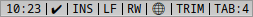
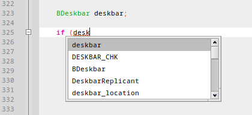

| Index |
|
Elements of the editor view ┣━ File tab ┣━ Margins ┣━ Lock menu ┣━ Line/Column display ┣━ Status display ┗━ Vertical ruler Working with the editor |
The Editor
The editor view takes naturally the largest part of the main window. In the menu it can be made (ALT ENTER), in (SHIFT ALT ENTER) the toolbar and the projects and output panes are hidden to minimize distractions.
Hit ALT ENTER again to return to normal mode.
 Elements of the editor view
Elements of the editor view
File tab
Every file is displayed in a tab in the editor view. In the Project settings, each project can be assigned a color, which is displayed before the file name. This makes it easy to see at a glance where a file is coming from. A tooltip provides the same info textually.
Margins
There are four margins that you can show/hide in Genio's settings:
Line number margin
Clicking on a line in the Line number margin selects that whole line. You can drag over multiple lines while holding the mouse button to select them all.Bookmark margin
A click in the Bookmark margin adds a little icon at that line and you can now jump between those bookmarks with the commands in .Folding margin
The Folding margin has little ' - ' widgets at the start of code blocks that are between brackets. Click on the widget, and it turns into a ' + ' and the code block gets folded into a single horizontal line. Click on the widget again to unfold the code block.
From the menu you can quickly , or use the corresponding icon from the Toolbar.Comment margin
A click in the Comment margin quickly un/comments that line.
Lock menu
This is a pop-up menu allowing you to make the current file to prevent accidental changes. It's the same as clicking the lock icon in the Toolbar.
Locked files are marked with a little lock symbol in the tab.
Line/Column display
It doesn't only display the line and column number of the current cursor position. Click it to open a panel to enter a line number to jump to. The same is done with or ALT ,.
Status display
The status area displays information about the current file:

From left to right:
- The row and column of the current cursor position, mentioned above.
- The status of the LSP backend. Shows "!" while parsing and "✔" when idle.
- The current writing mode (INS = insert, OVR = overwrite). Clicking it toggles the mode, which is normally done with INS on the keyboard.
- The line endings of the current file (LF = Linefeed, CR = Carriage Return).
- The file's write permissions (RW = read/write, RO = read-only).
- Shows if the file is being configured by an .editconfig file (text icon: üìÑ) or by the global Genio settings (globe icon: üåê). See Editor settings.
- Shows if trailing whitespaces get trimmed when saving.
- Shows the tab width (spaces per tab).
Vertical ruler
In Genio's settings you can opt to display a vertical line at a specific column to remind you to keep to a maximal line length, for example, 100 chars.
Working with the editor
Let's have a quick look at some features that make working in the editor more fun and efficient.
Indenting blocks of code
If you want to change the indention of a block of code, you select its lines and just press TAB to indent more, or SHIFT TAB to indent less.
Switch between source and header
With a quick ALT TAB or , you can jump between a .cpp and its .h file.
Links and info on headers
You can hold ALT and click on an included header to open its file.
Hover your mouse over it and a tooltip shows the header's location on disk and which functions etc. it provides and are used from it.
Jump to definition/declaration
You can jump between the definition and declaration of a member variable, function or class etc. and vice-versa. Either right-click on it and choose or hit ALT G after placing the cursor on it.
Often even easier: Just hold ALT and symbols become underlined when the mouse pointer hovers over them. Then it's a simple left-click to jump to the definition/declaration.
Rename symbols
Right-clicking a symbol name (i.e. for example a function or variable name), you can choose from the context menu to change the name of that symbol in the whole project. This works similarly in the Outline pane.
Code correction
Genio is constantly having an eye on your code and warns about errors and typos etc. Potential issues are marked with a red squiggly underline.
If you hover the mouse pointer over a such underlined part, a tooltip will explain the issue. Also keep an eye on the Problems tab in the output pane at the bottom.
If there's a fix available, you can apply it with a right-click and choosing the fix from the pop-up menu. Here we need to add a semicolon at the end of line 323.
Code completion
Using , or more conveniently ALT SPACEBAR, can make you more efficient and sometimes saves you having to consult the API documentation.
This example illustrates the usage:

Hitting ALT SPACEBAR after entering "desk" pops up a window where you can choose the correct object with ↓ ↑ and insert it with ENTER.
When entering the ".", you get another window with the available functions of that object (here BDeskbar). If you continue writing, the selection jumps to the matching function. Again use ↓ ↑ and insert it with ENTER.
Now another window pops up to show the type of arguments the picked function expects. If it is overloaded so there are several functions of that name, but with different parameters, you can use ↓ ↑ to see what's available.
ESC closes all these pop-up windows.
Back: QuickStart Next: Panes